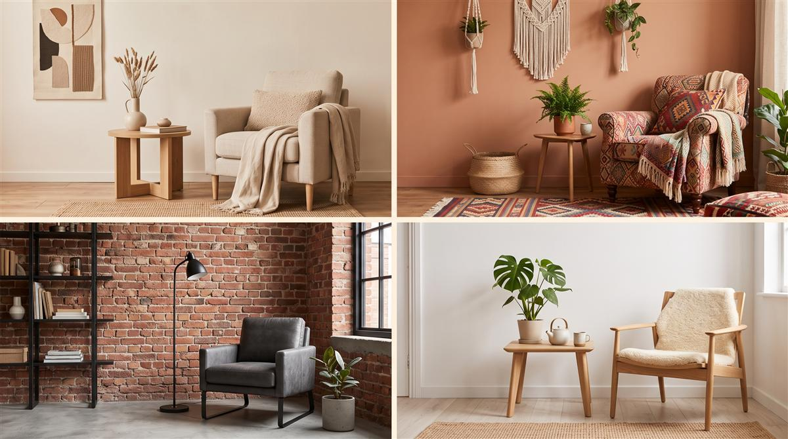

Quiz rápido · 2 minutos
Qual é o seu estilo de decoração?
Responda 10 perguntas sobre o que você gosta (cores, texturas, o clima do seu apê ideal), e descubra qual dos 9 estilos de decoração combina com você.

Quase lá
Seu estilo está pronto!
Deixe seus dados para ver o resultado agora — e receber mais conteúdos sobre design de interiores.
Seu estilo é
Como aplicar no seu espaço